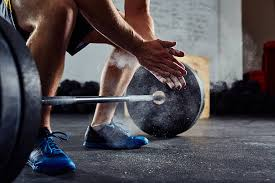
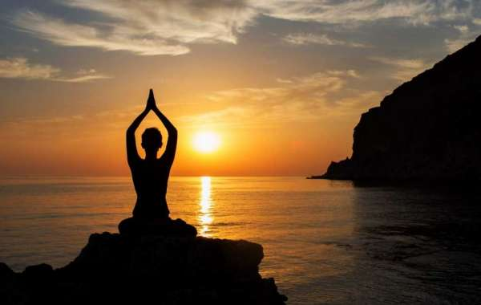
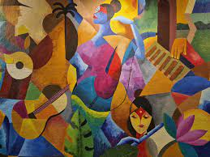

About Me
Hey there, welcome! Thank you for visiting our page today! This awesome page was created by Khalil Reza, Valeria Munguia, and Elizabeth Nichols.
This webpage goes over some of our most enjoyable hobbies.
I hope you can take a thing or two out of our hobbies and implement it as one of your own!
Our Favorite Hobbies:

Exercise

Yoga

Art